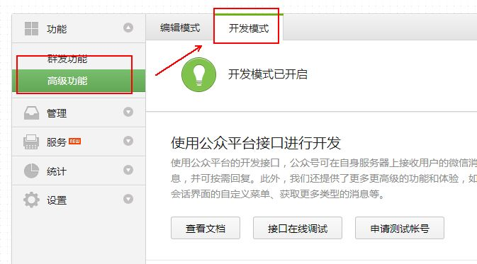
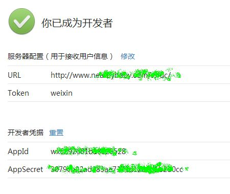
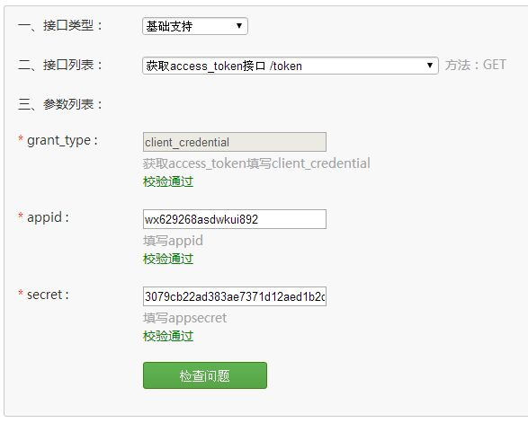
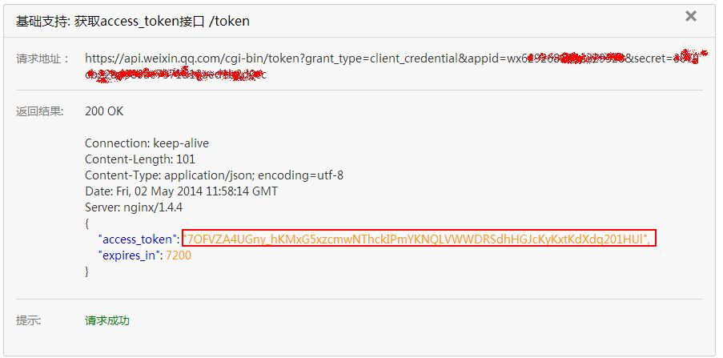

本文介绍微信公众平台下Access Token的概念及获取方法
一、Access Token
access_token是公众号的全局唯一票据，公众号调用各接口时都需使用access_token。正常情况下access_token有效期为7200秒，重复获取将导致上次获取的access_token失效。
公众号可以使用AppID和AppSecret调用本接口来获取access_token。AppID和AppSecret可在开发模式中获得（需要已经成为开发者，且帐号没有异常状态）。注意调用所有微信接口时均需使用https协议。
接口调用请求说明
http请求方式: GET https://api.weixin.qq.com/cgi-bin/token?grant_type=client_credential&appid=APPID&secret=APPSECRET
参数说明
| 参数 | 是否必须 | 说明 |
|---|---|---|
| grant_type | 是 | 获取access_token填写client_credential |
| appid | 是 | 第三方用户唯一凭证 |
| secret | 是 | 第三方用户唯一凭证密钥，既appsecret |
返回说明
正常情况下，微信会返回下述JSON数据包给公众号：
{"access_token":"ACCESS_TOKEN","expires_in":7200}
| 参数 | 说明 |
|---|---|
| access_token | 获取到的凭证 |
| expires_in | 凭证有效时间，单位：秒 |
错误时微信会返回错误码等信息，JSON数据包示例如下（该示例为AppID无效错误）:
{"errcode":40013,"errmsg":"invalid appid"}
二、AppId和AppSecret
在微信后台使用找到高级功能-开发模式

成为开发者之后，就可以看到appid和appsecert了

如果没有url和Token , 你可以先用方倍工作室的下面的测试通过
URL: http://discuz.comli.com/test.php
Token: weixin
三、获取Access Token
程序实现如下

$appid = ""; $appsecret = ""; $url = "https://api.weixin.qq.com/cgi-bin/token?grant_type=client_credential&appid=$appid&secret=$appsecret"; $ch = curl_init(); curl_setopt($ch, CURLOPT_URL, $url); curl_setopt($ch, CURLOPT_SSL_VERIFYPEER, FALSE); curl_setopt($ch, CURLOPT_SSL_VERIFYHOST, FALSE); curl_setopt($ch, CURLOPT_RETURNTRANSFER, 1); $output = curl_exec($ch); curl_close($ch); $jsoninfo = json_decode($output, true); $access_token = $jsoninfo["access_token"];
你也可以直接在浏览器地址栏中，拼接出地址，执行后，获得如下数据
{"access_token":"N2L7KXa084WvelONYjkJ_traBMCCvy_UKmpUUzlrQ0EA2yNp3Iz6eSUrRG0bhaR_viswd50vDuPkY5nG43d1gbm-olT2KRMxOsVE08RfeD9lvK9lMguNG9kpIkKGZEjIf8Jv2m9fFhf8bnNa-yQH3g","expires_in":7200}
参数说明如下
|
参数 |
说明 |
|
access_token |
获取到的凭证 |
|
expires_in |
凭证有效时间，单位：秒 |
或者使用官方的接口调试工具，地址为：

点击检查问题得，得到

这样也获得了access token
附：全局返回码说明
公众号每次调用接口时，可能获得正确或错误的返回码，开发者可以根据返回码信息调试接口，排查错误。
全局返回码说明如下：
| 返回码 | 说明 |
|---|---|
| -1 | 系统繁忙 |
| 0 | 请求成功 |
| 40001 | 获取access_token时AppSecret错误，或者access_token无效 |
| 40002 | 不合法的凭证类型 |
| 40003 | 不合法的OpenID |
| 40004 | 不合法的媒体文件类型 |
| 40005 | 不合法的文件类型 |
| 40006 | 不合法的文件大小 |
| 40007 | 不合法的媒体文件id |
| 40008 | 不合法的消息类型 |
| 40009 | 不合法的图片文件大小 |
| 40010 | 不合法的语音文件大小 |
| 40011 | 不合法的视频文件大小 |
| 40012 | 不合法的缩略图文件大小 |
| 40013 | 不合法的APPID |
| 40014 | 不合法的access_token |
| 40015 | 不合法的菜单类型 |
| 40016 | 不合法的按钮个数 |
| 40017 | 不合法的按钮个数 |
| 40018 | 不合法的按钮名字长度 |
| 40019 | 不合法的按钮KEY长度 |
| 40020 | 不合法的按钮URL长度 |
| 40021 | 不合法的菜单版本号 |
| 40022 | 不合法的子菜单级数 |
| 40023 | 不合法的子菜单按钮个数 |
| 40024 | 不合法的子菜单按钮类型 |
| 40025 | 不合法的子菜单按钮名字长度 |
| 40026 | 不合法的子菜单按钮KEY长度 |
| 40027 | 不合法的子菜单按钮URL长度 |
| 40028 | 不合法的自定义菜单使用用户 |
| 40029 | 不合法的oauth_code |
| 40030 | 不合法的refresh_token |
| 40031 | 不合法的openid列表 |
| 40032 | 不合法的openid列表长度 |
| 40033 | 不合法的请求字符，不能包含\uxxxx格式的字符 |
| 40035 | 不合法的参数 |
| 40038 | 不合法的请求格式 |
| 40039 | 不合法的URL长度 |
| 40050 | 不合法的分组id |
| 40051 | 分组名字不合法 |
| 41001 | 缺少access_token参数 |
| 41002 | 缺少appid参数 |
| 41003 | 缺少refresh_token参数 |
| 41004 | 缺少secret参数 |
| 41005 | 缺少多媒体文件数据 |
| 41006 | 缺少media_id参数 |
| 41007 | 缺少子菜单数据 |
| 41008 | 缺少oauth code |
| 41009 | 缺少openid |
| 42001 | access_token超时 |
| 42002 | refresh_token超时 |
| 42003 | oauth_code超时 |
| 43001 | 需要GET请求 |
| 43002 | 需要POST请求 |
| 43003 | 需要HTTPS请求 |
| 43004 | 需要接收者关注 |
| 43005 | 需要好友关系 |
| 44001 | 多媒体文件为空 |
| 44002 | POST的数据包为空 |
| 44003 | 图文消息内容为空 |
| 44004 | 文本消息内容为空 |
| 45001 | 多媒体文件大小超过限制 |
| 45002 | 消息内容超过限制 |
| 45003 | 标题字段超过限制 |
| 45004 | 描述字段超过限制 |
| 45005 | 链接字段超过限制 |
| 45006 | 图片链接字段超过限制 |
| 45007 | 语音播放时间超过限制 |
| 45008 | 图文消息超过限制 |
| 45009 | 接口调用超过限制 |
| 45010 | 创建菜单个数超过限制 |
| 45015 | 回复时间超过限制 |
| 45016 | 系统分组，不允许修改 |
| 45017 | 分组名字过长 |
| 45018 | 分组数量超过上限 |
| 46001 | 不存在媒体数据 |
| 46002 | 不存在的菜单版本 |
| 46003 | 不存在的菜单数据 |
| 46004 | 不存在的用户 |
| 47001 | 解析JSON/XML内容错误 |
| 48001 | api功能未授权 |
| 50001 | 用户未授权该api |
附：接口频率限制说明
公众号调用接口并不是无限制的。为了防止公众号的程序错误而引发微信服务器负载异常，默认情况下，每个公众号调用接口都不能超过一定限制，当超过一定限制时，调用对应接口会收到如下错误返回码：
{"errcode":45009,"errmsg":"api freq out of limit"}
各接口调用频率限制如下：
| 接口 | 每日限额 |
|---|---|
| 获取access_token | 2000 |
| 自定义菜单创建 | 1000 |
| 自定义菜单查询 | 10000 |
| 自定义菜单删除 | 1000 |
| 创建分组 | 1000 |
| 获取分组 | 1000 |
| 修改分组名 | 1000 |
| 移动用户分组 | 100000 |
| 上传多媒体文件 | 5000 |
| 下载多媒体文件 | 10000 |
| 发送客服消息 | 500000 |
| 获取带参数的二维码 | 10000 |
| 获取关注者列表 | 500 |
| 获取用户基本信息 | 5000000 |
| 获取网页授权access_token | 2000000 |
| 刷新网页授权access_token | 2000000 |
| 网页授权获取用户信息 | 2000000 |